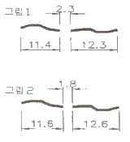
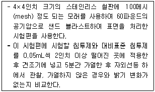
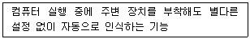

침투비파괴검사기사(구) (2011-10-02 기출문제)
1과목: 침투탐상시험원리
1. 침투액이나 현상제의 잔류물을 제거해 주는 후처리과정이 반드시 필요한 경우는?
- 구조물의 불연속을 수리한 경우
- 배경 색깔과 구분이 확실히 만들어지는 경우
- 다음 공정이나 부품의 운전에 방해가 될 수 있는 경우
- 빨려나온 침투액의 유화과정에 도움을 줄 수 있는 경우
(정답률: 알수없음)

2. 유화제의 기능을 옳게 설명한 것은?
- 허위지시를 없애준다.
- 현상제의 흡출작용을 돕는다.
- 미세한 불연속으로 침투하는 작용을 증가시킨다.
- 침투액과 결함하여 물 세척이 가능하도록 반응한다.
(정답률: 알수없음)
3. 침투탐상시험시 사용되는 건식 현상제의 특성으로 옳은 것은?
- 불수용성이다.
- 정밀검가사 용이하다.
- 덩어리로 보관이 용이하다.
- 침투액의 적용이 필요 없다.
(정답률: 알수없음)
4. 후유화제법에서 가장 중요하게 다루어야 할 작업시간은?
- 침투시간
- 현상시간
- 유화시간
- 건조시간
(정답률: 알수없음)
5. 형광 침투액과 비교하였을 때 염색 침투액의 장점은?
- 감도가 좋다.
- 비용이 적게 든다.
- 미세한 결함 탐상에 유리하다.
- 작은 부품 검사에 효과적이다.
(정답률: 알수없음)
6. 용제제거성 염색침투탐상시험으로 결함을 검출하는데 가장 부적합한 경우는?
- 아주 미세한 균열의 탐상
- 수도나 전기시설이 없는 경우
- 대형품이나 구조물의 부분적 탐상
- 시험장소를 어둡게 하기 곤란한 경우
(정답률: 알수없음)
7. 누설검사를 실시하는 직접적인 이유로 보기에 가장 거리가 먼 것은?
- 제품의 생산성을 증대시키기 위해
- 돌발적인 누설에 기인하는 유해한 환경적 요소를 방지하기 위해
- 표준에서 벗어난 누설률과 부적절한 제품을 검출하기 위해
- 시스템 작동에 방해되는 재료의 누설 손실을 방지하기위해
(정답률: 알수없음)
8. 초음파탐상시험 결과의 신뢰도 평가에서 결함검출확률(probability of detection; POD)에 영향을 미치는 인자가 아닌 것은?
- 대비시험편의 개수
- 결함의 크기와 방향성
- 시험 환경 및 검사자의 기량
- 검사시스템의 성능과 시험방법의 선택
(정답률: 알수없음)
9. 초음파 탐상시험에 대한 설명 중 틀린 것은?
- 불감대가 존재하지 않는다.
- 투과능력이 탁월하다.
- 검사결과를 신속히 알 수 있다.
- 검사자 또는 주변인에 대한 장애가 없다.
(정답률: 알수없음)
10. X선투과시험과 비교한 γ선투과시험의 장점에 대한 설명으로 틀린 것은?
- 운반하기 쉽고, 협소한 장소에 접근하기 쉽다.
- 동일한 에너지 범위일 경우 X선 장비보다 가격이 저렴하다.
- γ선은 동위원소의 핵에서 방출되는 전자파이므로 외부 전원이 필요치 않다.
- 에너지가 높으므로 두꺼운 검사체에 사용할 수 있고, 선명한 투과사진을 얻을 수 있다.
(정답률: 알수없음)
11. 비파괴시험의 목적이 아닌 것은?
- 제조원가의 절감
- 신뢰성의 향상
- 제조기술의 개량
- 금속재료의 조직검사
(정답률: 알수없음)
12. 구조물의 표면 주응력을 구하기 위해 3축 변형을 측정하여야 한다. 이를 위해 2방향 이상의 변형을 동시에 측정하는데 주로 사용되는 게이지는?
- 단축 게이지
- 크렉 게이지
- 로제트 게이지
- 방수 게이지
(정답률: 알수없음)
13. 기체에 방사선이 닿으면 전기적으로 중성이었던 기체의 원자 또는 분자가 이온으로 분리되는 작용은?
- 형광작용
- 사진작용
- 전리 작용
- 기상작용
(정답률: 알수없음)
14. 자분탐상검사에서 자분의 선택시 고려해야 할 사항을 설명한 것 중 틀린 것은?
- 건식용 자분은 폭이 비교적 넓은 것에 사용한다.
- 습식용 자분은 비교적 매끈한 표면의 미세한 결함의 탐상에 알맞다.
- 형광 자분은 비형광 자분보다도 자분모양을 식별하기 쉽지만 어둡게 할 수 있을 때만 사용한다.
- 형광 자분은 시험체 표면의 색과 대비에 상관없이 흰색으로만 자분 사용을 결정한다.
(정답률: 알수없음)
15. 다른 비파괴검사법과 비교한 침투탐상시험의 장점에 대한 설명으로 틀린 것은?
- 적용 방법이 비교적 간단하다.
- 모든 불연속의 검출이 가능하다.
- 불연속에 대한 평가가 비교적 쉽다.
- 원리가 비교적 간단하고 이해하기 쉽다.
(정답률: 알수없음)
16. 전원의 공급이 없어도 검사가 가능한 비파괴 검사법은?
- 엑스선투과검사, 사각법 초음파탐상검사
- 극간식 자분탐상검사, 관통형 와전류탐상검사
- 용제제거성 염색침투탐상검사, 직접 육안검사
- 압력변화법 누설검사, 용제제거성 형광침투탐상검사
(정답률: 알수없음)
17. 시험체의 표면 근처에 불연속 또는 구조 변화가 있으면 온도구배에 의해 전압이 발생하며 이를 전위차계로 검사하는 방법으로서 불연속, 편석, 열전 특성을 측정할 수 있는 비파괴검사법은?
- 열적 검사법
- 화학분석 검사법
- 방사선투과 검사법
- 음파-초음파 검사법
(정답률: 알수없음)
18. 와전류탐상시험이 가능하지 않은 대상물은?
- 고무 막대
- 강철 막대
- 구리 막대
- 알루미늄 막대
(정답률: 알수없음)
19. 와전류탐상검사법의 특징을 설명한 것 중 틀린 것은?
- 도체에 적용된다.
- 음향탐상검사법이다.
- 시험체의 표면에 있는 결함검출을 대상으로 한다.
- 간단한 시험체의 자동화나 고속검사에 용이하다.
(정답률: 알수없음)
20. 다음 중 관통된 누설검사를 적용할 수 있는 비파괴시험은?
- 침투탐상검사
- 방사선투과검사
- 자분탐상검사
- 와류탐상검사
(정답률: 알수없음)
2과목: 침투탐상검사
21. 자외선을 방출하는 자외선등에 부착된 필터가 제거해야 하는 빛의 종류는?
- 자연광선
- 침투제에 의한 형광
- 등에서 발산하는 가시광선
- 등에서 발산하는 300nm 이상의 파장을 가진 광선
(정답률: 알수없음)
22. 탐상검사 중 그림 1과 같은 선상 침투지시모양이 나타나서 이 지시모양을 제거한 후 여러 방법으로 다시 탐상한 결과 그림 2와 같은 지시모양을 최종 결과로 얻었다. 이 지시에 대하여 옳게 분류한 것은? (단, KS B 0816을 기준으로 분류하며, 그림의 숫자 단위는 mm 이다. )

- 분산결함이며, 11.4mm 1개, 12.3mm 1개로 분류한다.
- 분산결함이며, 11.6mm 1개, 12.6mm 1개로 분류한다.
- 연속결함이며, 24.2mm 1개로 분류한다.
- 연속결함이며, 26.0mm 1개로 분류한다.
(정답률: 알수없음)
23. 수세성 염색침투탐상검사의 장점이 아닌 것은?
- 형상이 복잡한 시험체의 탐상에 적합하다.
- 세척처리가 쉽고 표면이 거친 시험체에 적합하다.
- 결함검출감도가 높아서 미세한 결함검출에 적합하다.
- 양산 부품의 탐상에 적합하다.
(정답률: 알수없음)
24. 침투탐상시험시 넓고 얕은 불연속을 찾는데 다음 중 가장 효과적인 침투액은?
- 수세성 형광침투액
- 용제제거성 염색침투액
- 수세성 염색침투액
- 후유화성 형광침투액
(정답률: 알수없음)
25. 사용 중에 발생되는 불연속이 아닌 것은?
- 피로균열
- 응력부식균열
- 핏팅(pitting)
- 라미네이션
(정답률: 알수없음)
26. 침투탐상검사시 결함 검출감도가 가장 낮은 형상법은?
- 무현상법
- 건식 현상법
- 습식 현상법
- 속건식 현상법
(정답률: 알수없음)
27. 침투탐상검사로 검출할 수 없는 결함은?
- 균열
- 표면 겹침
- 표면 적층
- 내부단조 파열
(정답률: 알수없음)
28. 대형 용량의 탱크를 건설 중에 있다. 시방서에 용접부 위에 대하여 염색침투탐상검사 및 내압검사를 실시하도록 명시되어 있을 때 침투탐상검사와 내압검사 실시시기로 가장 적합한 것은?
- 내압검사는 침투탐상검사 전에 행하여야 한다.
- 침투탐상검사는 내압검사 전에 실시해야 한다.
- 내압검사에서 발견된 부위만을 보수 후 침투탐상검사를 행한다.
- 내압검사 전후에 걸쳐 침투탐상검사를 실시하는 것이 원칙이다.
(정답률: 알수없음)
29. 침투탐상검사로 발견되는 불연속의 측정에 대한 설명으로 옳은 것은?
- 시험체의 인장력을 측정한다.
- 시험체의 표면 불연속을 검출한다.
- 시험체의 어떤 불연속이라도 발견하고 평가한다.
- 시험체 불연속의 길이, 넓이를 발견하고, 깊이를 측정한다.
(정답률: 알수없음)
30. 후유화성 방법(post emulsification method)으로 침투탐상검사를 할 경우 유화시간은 일반적으로 어떻게 결정하는 가?
- 실험을 하여 결정한다.
- 제조회사의 권고에 따라 결정한다.
- 다른 요소와 관계없이 5분 이내로 한다.
- 유화제 내에 오염된 침투제의 양에 따라 결정한다.
(정답률: 알수없음)
31. 침투탐상검사에 대비시험편을 사용하는 주목적은?
- 점성 측정
- 오염도 측정
- 수분함량 확인
- 탐상성능 확인
(정답률: 알수없음)
32. 침투제의 형광은 자외선등 아래에 긴 시간 노출되었을 때와 시험체의 표면 온다가 높을 때 특성이 나빠진다. 특성 검사 중 다음은 어떤 성능시험에 대한 설명인가?

- 형광 밝기 시험
- 형광 얼룩 반점 시험
- 고온 금속판에서의 형광안정성 시험
- 자외선등 하에서의 형광안정성 시험
(정답률: 알수없음)
33. 침투탐상검사 중 침투액의 침투성이 좋아지도록 통상적으로 행하는 가장 효율적인 방법은?
- 진동을 준다.
- 침투제를 가열한다.
- 초음파 펌핑을 한다.
- 진공을 만들어 압력을 낮추어 준다.
(정답률: 알수없음)
34. 전처리시 탄소강 시험체의 표면에 발생한 부식, 녹, 산화물, 스케일 등의 오염물을 제거하는 방법으로 적절하지 않은 것은?
- 전기 세척
- 용제 세척
- 증기 블라스팅
- 산, 알칼리 세척
(정답률: 알수없음)
35. 용제제거성 형광침투제로 탐상할 때 솔벤트 세척제의 역할로 옳은 것은?
- 결함에서 침투제를 제거한다.
- 침투제의 유화속도를 증가시킨다.
- 시험체 표면의 잉여 침투액을 제거한다.
- 시험품 표면의 침투제를 수세성으로 변화시킨다.
(정답률: 알수없음)
36. 용제제거성 침투액을 사용할 때 표면의 침투액 제거용 천으로 가장 적합한 것은?
- 면
- 모직
- 비단
- 합성섬유
(정답률: 알수없음)
37. 단속적으로 용접이 된 단조겹침에서 나타날 수 있는 지시의 형태는?
- 지시가 나타나지 않음
- 매우 가늘고 연속된 선으로 나타남
- 넓고 연속적인 선으로 나타남
- 단속적인 선으로 나타남
(정답률: 알수없음)
38. 적층 섬유강화 복합재료에 있는 결함 중 침투탐상검사로 검출할 수 있는 결함은?
- 내부 기공
- 강화섬유의 파단
- 표면층의 층상 박리
- 재료 내부에 존재하는 층간 적합 불량
(정답률: 알수없음)
39. 침투액의 온도가 높아져서 휘발성분이 증발함에 따라 일어나는 현상이 아닌 것은?
- 형광 특성이 높아진다.
- 수분 함유량이 달라진다.
- 현상제 적용시 집중현상이 발생한다.
- 침투액의 점도가 증가하여 침투속도가 늦어진다.
(정답률: 알수없음)
40. 시간이 경과하여도 비교적 실제 결함형태와 비슷한 침투지시모양을 얻고자 할 때 가장 적합한 현상방법은?
- 무현상법
- 습식 현상법
- 건식 현상법
- 속건식 현상법
(정답률: 알수없음)
3과목: 침투탐상관련규격
41. 항공우주용 기기의 침투탐상 검사방법(KS W 0914)에서 침투액의 체류시간은 최소 10분 동안으로 하며 아울러 체류시간이 얼마를 초과하면 건조되지 않게 침투액을 재적용하도록 규정하고 있는가?
- 30분
- 60분
- 90분
- 120분
(정답률: 알수없음)
42. 항공우주용 기기의 침투탐상 검사방법(KS W 0914)에 의한 건식현상제의 점검사항 중 반복 사용하는 건식현상제는 그 시료를 평탄한 면에 엷게 살포했을 때, 지름 10cm인 원안에 몇 개 이상의 형광점이 확인되면 불만족한 것으로 평가하는가?
- 5개
- 10개
- 15개
- 20개
(정답률: 알수없음)
43. 침투탐상 시험방법 및 침투지시모양의 분류(KS B 0816)에 침투시간을 시험품과 침투액의 온도를 고려햐여 예측되는 결함의 종류와 크기에 따라 정하도록 하고 있다. 강 용접부의 융합불량을 검출하고자 상온 25℃ 에서 시험할 때 필요한 표준 침투시간은?
- 5분
- 8분
- 10분
- 15분
(정답률: 알수없음)
44. 침투탐상 시험방법 및 침투지시모양의 분류(KS B 0816)에 따라 시험기록에 시험 온도를 반드시 기재하여야 하는 경우는?
- 20℃ 이하 때
- 30℃ 이상일 때
- 40℃ 이상일 때
- 50℃ 이상일 때
(정답률: 알수없음)
45. 항공우주용 기기의 침투탐상 검사방법(KS W 0914)의 규정에서 “평가(Evaluation)”란 용어의 뜻으로 옳은 것은?
- 지시를 검출하기 위하여 행하는 검사
- 지시무늬의 발생원인 밑 그 종류를 판정하는 것
- 침투탐상 처리공정 종료 후 적절한 조명 아래에서 하는 구성부품의 육안검사
- 지시무늬를 판단한 후에 구성 부품의 합격 여부를 결정하기 위하여 하는 검토
(정답률: 알수없음)
46. 보일러 및 압력용기에 대한 침투탐상검사(ASME Sec.V Art.6)에 따라 오스테나이트계 스테인리스 강관의 용접부를 수세성 형광침투탐상시험할 때 필요한 재료 및 시험조건 중 요구사항에 적합한 것은?
- 현상 최소 유지시간 5분
- 용접부의 표면 온도 50℉
- 철 솔질법으로 침투액 적용
- 황 및 염소함량이 각각 1.2% 인 침투제 황(sulfur) 및 염소함량이 각각 2.0% 인 침투액
(정답률: 알수없음)
47. 침투탐상 시험방법 및 침투지시모양의 분류(KS B 0816)에 따른 시험방법의 분류 중 습식 현상제를 사용하는 후유화성 형광 침투탐상법을 표시하는 기호는?
- FA-S
- FA-W
- FB-S
- FB-W
(정답률: 알수없음)
48. 보일러 및 압력용기에 대한 침투탐상검사(ASME Sec.V Art.6)에서 용접부위를 탐상할 때 전처리 과정에서 용접 부위와 인접 경계면은 적어도 몇 cm 이내에 있는 오물, 구리스, 녹 등을 제거하도록 규정하고 있는가?
- 1.3cm
- 2.5cm
- 3.8cm
- 5.1cm
(정답률: 알수없음)
49. 보일러 및 압력용기에 대한 표준 침투탐상검사(ASME Sec.V Art.24 SE-165)에서 건조기를 사용할 때 건조기의 온도는 최대 몇 ℃를 넘지 않아야 하는가?
- 35℃
- 45℃
- 60℃
- 70℃
(정답률: 알수없음)
50. 항공우주용 기기의 침투탐상 검사방법(KS W 0914)에 따른 타입 I, 방법 A 의 탐상 방법은?
- 수세성 형광침투탐상시험법
- 후유화성 형광침투탐상시험법
- 수세성 염색침투탐상시험법
- 후유화성 염색침투탐상시험법
(정답률: 알수없음)
51. 보일러 및 압력용기에 대한 표준 침투탐상검사(ASME Sec.V Art.24 SE-165)에 따른 탐상시험의 종류 및 방법의 분류가 옳게 조합된 것은?
- 염색침투탐상시험 : 방법 A – 후유화성(기름베이스)
- 염색침투탐상시험 : 방법 B – 후유화성(물베이스)
- 형광침투탐상시험 : 방법 C – 용제제거성
- 형광침투탐상시험 : 방법 D – 수세성
(정답률: 알수없음)
52. 침투탐상 시험방법 및 침투지시모양의 분류(KS B 0816)에 따라 일반적으로 15~50℃ 의 범위에서 표준이 되는 현상시간은?
- 5분
- 7분
- 10분
- 15분
(정답률: 알수없음)
53. 침투탐상 시험방법 및 침투지시모양의 분류(KS B 0816)에 의한 침투탐상시험의 설명 중 틀린 것은?
- FB 에는 유화액이 필요하다.
- FC 에는 염색 침투액이 필요하다.
- VC 에는 세척액이 필요하다.
- 현상제는 탐상제 중의 하나이다.
(정답률: 알수없음)
54. 보일러 및 압력용기에 대한 침투탐상검사(ASME Sec.V Art.6)에 따라 알루미늄 주조품의 균열을 검출하고자 할 때 침투제의 최소 유지시간으로 옳은 것은?
- 5분
- 7분
- 10분
- 14분
(정답률: 알수없음)
55. 보일러 및 압력용기에 대한 표준 침투탐상검사(ASME Sec.V Art.24 SE-165)에 따른 수성 현상제 적용 후 관찰하기 전까지 최대 허용 현상시간은?
- 1시간
- 2시간
- 4시간
- 8시간
(정답률: 알수없음)
56. 메타 검색엔진의 구성 요소가 아닌 것은?
- 웹 로봇
- 색인 데이터베이스
- 질의 서버
- 라우터
(정답률: 알수없음)
57. 다음이 설명하고 있는 Windows 운영체제의 기능은?

- S/W Setting
- H/W control
- Auto Run
- Plug and Play
(정답률: 알수없음)
58. 우리나라 정부기관인 행정안전부(mopas)의 도메인이름으로 옳은 것은?
- www.mopas.com
- www.mopas.go.kr
- www.mopas.co.kr
- www.mppas.pe.kr
(정답률: 알수없음)
59. 컴퓨터의 입력장치로 옳지 않은 것은?
- 디지털카메라
- 디지타이저
- 조이스틱
- 플로터
(정답률: 알수없음)
60. 컴퓨터 보안에서 인터넷의 보안 문제로부터 특정 네트워크를 격리시키는데 사용되는 시스템은?
- 방화벽(firewall)
- 해킹(hacking)
- 인증(authentication)
- 암호화(encryption)
(정답률: 알수없음)
4과목: 금속재료학
61. 강을 담금질(quenching)시켜 경화 조직을 얻을 때 효과가 가장 큰 원소군은?
- B, Mn
- Cu, Sn
- P, Al
- Cr, Mg
(정답률: 알수없음)
62. 시편의 전 표점거리 112mm, 지름 14mm, 최대하중 5500kg에서 시험편이 절단되었을 때 연신율이 17.9% 였다면 파단시 늘어난 표점길이는 몇 mm인가?
- 122
- 132
- 142
- 152
(정답률: 알수없음)
63. 기지가 오스테나이트 조직으로 내마모성이 우수하여 각종 광산기계, 심한 충격과 마모를 받는 부품 등에 사용되는 강은?
- 고몰리브덴강
- 고망간강
- 망간-크롬강
- 니켈-크롬강
(정답률: 알수없음)
64. 주철에서 Ni의 영향을 설명한 것 중 틀린 것은?
- 흑연화를 돕는다.
- 탄화물 형성을 원활하게 하고 칠(chill)화에 효과적이다.
- 기지 조직에 고용되며 첨가함량의 증가에 따라 펄라이트 → 소르바이트 → 마텐자이트 → 오스테나이트 기지로 변화한다.
- Ni이 12~14% 이상 첨가된 오스테나이트기지의 주철은 산, 알칼리, 해수 등에 대한 내식성, 내산화성이 향상된다.
(정답률: 알수없음)
65. 알루미늄(Al) 합금에 대한 설명 중 틀린 것은?
- Y 합금의 주요 성분은 Al-Cu-Ni-Mg 이다.
- 라우탈의 주요 조성은 Al-Cu-Si 계 합금이다.
- Al에 약 10%Mo 을 첨가한 합금을 하이드로날륨이라 한다.
- Al-Si 합금계를 실루민이라 하며 개량처리하여 사용한다.
(정답률: 알수없음)
66. 다음 중 무산소구리(Cu)에 대한 설명으로 옳은 것은?
- 산소나 탈산제를 함유한 구리(Cu)를 말한다.
- 유리의 봉착성(封着性)이 좋으므로 진공관용 재료로서 유리에 봉입하는 동선으로 사용된다.
- 정련구리보다 기계적 성질은 우수하나 수소취성이 있어 가공성이 좋지 않다.
- 산소 중에 용해 주조하거나 목탄 및 CO가스에 의하여 탈산처리하지 않은 분위기 중에서 주조한다.
(정답률: 알수없음)
67. 황동의 자연균열에 대한 설명으로 틀린 것은?
- 일종의 잔류응력 균열이다.
- 암모니아 분위기에서 쉽게 일어난다.
- β황동에는 Sn 이나 Si 첨가로 억제할 수 있다.
- 합금 중 Zn 이 용해되어 일어나는 균열이다.
(정답률: 알수없음)
68. 다음 중 수소저장 합금에 대한 설명으로 틀린 것은?
- 수소저장에 의해 미세한 금속 분말을 제조할 수 있다.
- 수소가 방출하면 금속 수소화물은 원래의 수소저장 합금으로 되돌아온다.
- 수소저장 합금은 수소를 흡수 저장할 때 수축하고, 방출할 때는 팽창한다.
- 수소 가스가 금속 표면에 흡착되고 이것이 금속 내부로 침입 고용되어 저장된다.
(정답률: 알수없음)
69. 시효처리에 대한 설명으로 틀린 것은?
- 과포화 고용체를 이용한 제2상의 석출과정이다.
- 온도가 높거나 시간이 길면 복원현상이 나타난다.
- 시효처리는 온도의 증가에 따른 취성증대가 목표이다.
- Al-Cu 합금의 석출과정은 과포화고용체 → G.P대 → 중간상 → 안정상 순이다.
(정답률: 알수없음)
70. 탄소강의 성질에서 탄소량의 증가에 따라 증가하는 것은?
- 비중
- 전기저항
- 열전도도
- 열팽창계수
(정답률: 알수없음)
71. 분말의 유동도에 대한 설명 중 틀린 것은?
- 분말의 유동도가 낮으면 제품의 생산성이 떨어진다.
- 분말의 유동도가 낮으면 제품의 특성이 불균일하다.
- 성형 다이의 설계시 반드시 유동도를 고려해야한다.
- 각진 형태의 제품보다는 둥근 형태의 제품에서 유동도가 중요시 된다.
(정답률: 알수없음)
72. 아연합금에 관한 설명 중 틀린 것은?
- 고순도 다이캐스팅 아연합금은 고온에서 입간부식을 일으킨다.
- 가공용 아연합금에는 Zn-Cu계, Zn-Cu-Mg계, Zn-Cu-Ti계 등이 있다.
- 금형용 아연합금은 다이캐스팅용보다 Al과 Cu를 증가시켜 강도 및 경도를 개선한 것이다.
- 다이캐스팅용 아연합금에서 알루미늄은 강도, 경도, 유동성을 개선한다.
(정답률: 알수없음)
73. 쾌석강을 만드는데 이용되는 대표 첨가원소가 아닌 것은?
- S
- Sn
- Pb
- Ca
(정답률: 알수없음)
74. 고융점 금속의 특성을 나타낸 것으로 틀린 것은?
- 증기압이 높다.
- 융점이 높으므로 고온강도가 크다.
- 고용융점 금속 중 W, Mo 은 열팽창계수가 낮다.
- 고용융점 금속 중 Ta, Nb 은 습식부식에 대한 내식성이 우수하다.
(정답률: 알수없음)
75. 다음 중 Pb 이 포함된 베어링 합금이 아닌 것은?
- Kelmet
- White metal
- Bahnmetal
- Monel metal
(정답률: 알수없음)
76. 풀림(annealing) 과정에서 재결정 거동에 영향을 주지 않는 것은?
- 재결정 전의 변형량
- 초기 결정입 크기
- 화학적 조성
- 광학적 성질
(정답률: 알수없음)
77. 순철이 Ac3 에서 동소변태한 경우 이때의 격자상수는 어떻게 되는가?
- 커진다.
- 작아진다.
- 변화가 없다.
- 가열속도에 따라 변화한다.
(정답률: 알수없음)
78. 탄소강에서 인(P)에 의해 나타내는 취성은?
- 수소취성
- 고온취성
- 저온취성
- 적열취성
(정답률: 알수없음)
79. 고속도 공구강의 대표적인 것으로 SKH2가 있으며 이에 대한 표준 조성으로 옳은 것은?
- 18%W-4%Cr-1%V
- 18%Cr-4%W-1%V
- 18%V-4%Cr-1%W
- 18%W-4%V-1%Cr
(정답률: 알수없음)
80. 강의 열처리에서 탄화물 생성원소가 아닌 것은?
- W
- Mo
- Si
- Cr
(정답률: 알수없음)
5과목: 용접일반
81. 이산화탄소 아크 용접에서 전진법과 후진법을 비교할 때 전진법의 장점으로 가장 적당한 것은?
- 용접선이 잘 보여 운봉을 정확하게 할 수 있다.
- 스패터의 발생이 적으며 진행 반대방향으로 흩어진다.
- 용착금속이 아크보다 뒤지므로 깊은 용입을 얻을 수 있다.
- 비드 높이가 높고 폭이 좁은 비드를 얻을 수 있다.
(정답률: 알수없음)
82. 심용접 중 모재를 맞대어 놓고 이음부에 같은 종류의 얇은 판을 대고 가압하여 심 용접하는 방법은?
- 포일 심용접
- 메시 심용접
- 맞대기 심용접
- 퍼커션 심용접
(정답률: 알수없음)
83. 맞대기 용접을 할 때 모재의 영향을 방지하기 위하여 홈 표면에 다른 종류의 금속을 표면 피복 용접하는 것을 의미하는 용접용어는?
- 버터링(buttering)
- 심 용접(seam welding)
- 앤드 탭(end tap)
- 덧살(flash)
(정답률: 알수없음)
84. 용해 아세틸렌을 충전하였을 때 용기 전체의 무게가 64.5 kgf 이었는데, 다 쓰고 난 후 빈 용기를 달아 보았더니 59.5 kgf 이었다. 다 소비한 아세틸렌가스의 양은 몇 L인가? (단, 15℃, 1kgf/cm2 하에서의 아세틸렌가스의 용적은 9⑤L임)
- 3480
- 3500
- 3520
- 4525
(정답률: 알수없음)
85. 다음 중 두께가 1.6mm인 연강 판으로 기름보일러의 물 탱크를 제작할 때 가장 적합한 용접은?
- 퍼커션 용접(percussion welding)
- 업셋 용접(upset welding)
- 심 용접(seam welding)
- 점 용접(spot welding)
(정답률: 알수없음)
86. 일반적인 용접작업의 순서를 나열한 것으로 가장 적합한 것은?
- 절단 및 가공 → 용접부 청소 → 검사 및 판정 → 본용접 → 가접
- 절단 및 가공 → 용접부 청소 → 검사 및 판정 → 가접 → 본용접
- 절단 및 가공 → 용접부 청소 → 본용접 → 가접 → 검사 및 판정
- 절단 및 가공 → 용접부 청소 → 가접 → 본용접 → 검사 및 판정
(정답률: 알수없음)
87. 일반적으로 모재의 용접선 근처의 열영향부에서 발생하는 균열로 용착금속 속의 확산성 수소에 의해 발생하는 균열은?
- 설퍼 균열
- 비드 밑 균열
- 토우 균열
- 루트 균열
(정답률: 알수없음)
88. 납땜에 사용되는 용제의 구비조건 중 틀린 것은?
- 모재의 산화피칵과 같은 불순물을 제거하고 유동성이 좋을 것
- 모재나 땜납에 대한 부식작용이 최대한 일 것
- 납땜 후 슬래그 제거가 용이할 것
- 청정한 금속면의 산화를 방지할 것
(정답률: 알수없음)
89. 다음 중 MIG 용접의 특징 설명으로 틀린 것은?
- 후판 용접에 적합하다.
- 소모식 전극봉을 사용한다.
- 용제를 사용하기 때문에 슬래그가 발생된다.
- 수동 피복 아크 용접에 비해 용착효율이 높아 고능률적이다.
(정답률: 알수없음)
90. 프로젝션 용접의 돌기의 형상 및 크기가 갖추어야 할 조건에 대한 설명으로 가장 거리가 먼 것은?
- 돌기는 판 두께가 두꺼울수록 높이와 지름을 적게 한다.
- 돌기는 통전 전의 예압에 충분히 견디어야 한다.
- 돌기는 타출하기가 용이하여야 한다.
- 돌기의 재질이 충분하며, 상대판과의 사이에 열평형이 유지되어야 한다.
(정답률: 알수없음)
91. 알루미늄, 마그네슘, 구리 및 구리합금, 스테인리스강의 절단에 주로 이용되는 절단법은?
- 산소 아크 절단(oxygen arc cutting)
- 탄소 아크 절단(carbon arc cutting)
- 티그(TIG) 절단(inert gas tungsten arc cutting)
- 아크 에어 가우징(arc air gouging)
(정답률: 알수없음)
92. 아크용접기의 정격 2차전류가 400A이고 정격사용율이 40%이면 300A로 용접전류를 사용하여 용접할 경우 이 용접기의 허용사용율은 약 몇 % 인가?
- 71%
- 80%
- 88%
- 91%
(정답률: 알수없음)
93. 피복 아크 용접에서 자기쏠림(magnetic blow)의 방지 대책이 아닌 것은?
- 교류 용접기를 사용한다.
- 접지를 용접부로부터 멀리한다.
- 후퇴용접법(back step welding)으로 용착한다.
- 일반적으로 긴 아크를 사용한다.
(정답률: 알수없음)
94. 일렉트로 가스 아크용접의 특징으로 틀린 것은?
- 정확한 조립이 요구되며 이동용 냉각 동판에 급수장치가 필요하다.
- 판 두께가 두꺼울수록 경제적이다.
- 용접장치가 간단하며 고도의 숙련을 요하지 않는다.
- 판 두께에 따라 단층으로 하진용접을 한다.
(정답률: 알수없음)
95. 다음 중 점화제의 화학반응을 이용하여 접합하는 용접은?
- 플라스마 아크 용접
- 전자빔 용접
- 피복 아크 용접
- 테르밋 용접
(정답률: 알수없음)
96. 프로판 가스의 성질 및 용도에 대한 설명으로 틀린 것은?
- 쉽게 기화하며 발열량이 높다.
- 온도변화에 따른 팽창률이 크고 물에 잘 녹는다.
- 가정에서 취사용 연료로 많이 사용된다.
- 상온에서는 기체 상태이고 무색, 투명하다.
(정답률: 알수없음)
97. 비드 밑 균열의 비파괴 검사방법으로 가장 적합한 것은?
- 외관 검사
- 초음파 탐상시험
- 누설검사
- 자분 탐상시험
(정답률: 알수없음)
98. 전기저항 점(spot)용접의 전극(electrode)의 재질에 대한 설명으로 틀린 것은?
- 전기 전도도가 높을 것
- 열전도율이 낮을 것
- 계속사용 시 내구성이 좋을 것
- 고온에서도 기계적 성질이 유지될 것
(정답률: 알수없음)
99. 내용적이 40L인 산소용기의 압력계 압력이 90기압 이었다면, 프랑스식 팁 300번으로는 몇 시간을 용접할 수 있는가? (단, 산소와 아세틸렌의 혼합비는 1 : 1이다.)
- 6시간
- 9시간
- 12시간
- 18시간
(정답률: 알수없음)
100. 인청동 모재의 TIG 용접에 관한 설명으로 틀린 것은?
- 직류 정극성을 주로 사용한다.
- 토륨 텅스텐 용접붕을 사용한다.
- 용접속도를 느리게 해야 한다.
- 보호가스를 아르곤 또는 아르곤+ 헬륨을 사용한다.
(정답률: 알수없음)